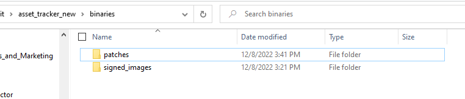
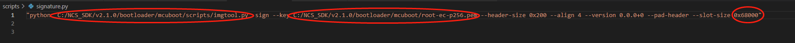
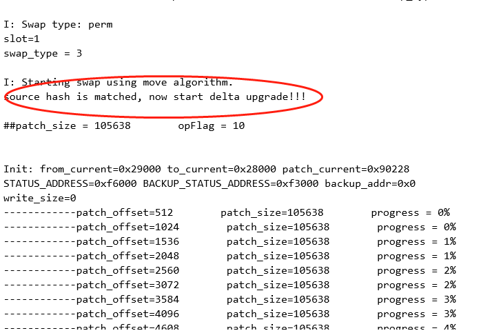
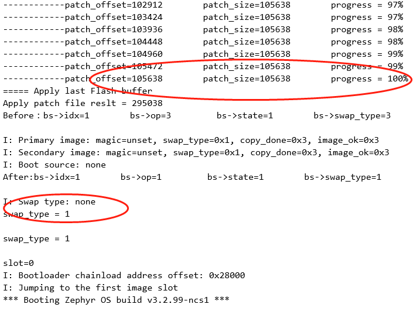

Testing
This is a user guider to tell you how to test the delta dfu , it is really ease for you to merge it to your SDK.
A delta firmware upgrade consists of the following steps:
install essential tools
pull the new boot code to replace your old code
prepare test application
generate patch file and transfer it to the secondary slot
Restart MCU to perform the update
Checking the result of the delta update
Install essential tools
- you should install detools on your PC:enter “pip install detools” command in the python environment.
- you should install cryptography,intelhex,click,cbor:requirements.txt
1cryptography>=2.6 2intelhex 3click 4cbor2
Save the above content to therequirements. txtfile then enter “pip install -r requirements.txt” command in the python environment.
Pull the new boot code to replace your old code
- you should pull the new boot code from below url and replace the boot folder in your SDK directory (v2.x.x/bootloader/mcubboot/boot).
https://github.com/Noy0908/delta_dfu_lib.git
Note
branch
delta-dfu-boot-v2.6.0is for nRF Connect SDK v2.6.0, the tag isv2.6.0branch
delta-dfu-boot-v2.5.0is for nRF Connect SDK v2.5.0, the tag isv2.5.0branch
delta-dfu-boot-v2.1.0is for nRF Connect SDK v2.1.0, the tag isv2.1.0
- enter your
bootfolder and open a git bash. - save your boot first.
$ git init . $ git add . $ git commit -m "original boot"
- add the remote repository of delta dfu
$ git remote add origin https://github.com/Noy0908/delta_dfu_lib.git
- pull the source code of delta dfu
$ git pull origin
- checkout to the branch or tag you want.
$ git tag --list $ git checkout v2.5.0
Prepare sample
- you can test it on our demo, below is the url and branches.
https://github.com/Noy0908/delta_dfu.git
Note
branch
delta-dfu-sampleis the demo for nRF9160,nRF52840 and nRF54L15, the corresponding tag isv1.0.0. - Of course you can test it on any application samples, but you need to copy the following folders or files from our demo to your project root directory.
scriptsfolder contains tools for generating patch files.binaries/signed_imagesfolder is used to save source image and target image.binaries/patchesfolder is used to save patch image.pm_static.ymlfile is used to reallocate your flash partition.child_image/mcuboot.conffile is used to config delta dfu feature in mcuboot.

- Regarding folder
scripts, you need to change the file:scripts/signature.py. Make sure it aligns with your own bootloader/mcuboot absolute path. And make--slot-size 0xaf000equal to the primary slot size, make--header-size 0x800equal to the mcuboot pad size. - allocate your flash partition. you can create a
pm_static.ymlfile in your project root directory to redefine the flash partition.Note
remember that you must define the primary slot and secondary slot, and these two slots support differnet size.
- enable delta dfu. you can modify
child_image/mcuboot.conffile to set these macros for different chipsets:mcuboot configurations.1CONFIG_BOOT_SIGNATURE_TYPE_ECDSA_P256=y 2#These macros for nRF54L15 sample 3CONFIG_BOOT_MAX_IMG_SECTORS=256 4CONFIG_NRF_RRAM_WRITE_BUFFER_SIZE=16 5#These macros for 9160DK and nRF52840 sample 6CONFIG_BOOT_MAX_IMG_SECTORS=240 7CONFIG_SOC_FLASH_NRF_EMULATE_ONE_BYTE_WRITE_ACCESS=y 8# support application delta dfu 9CONFIG_BOOT_UPGRADE_APP_DELTA=y 10CONFIG_MAIN_STACK_SIZE=20480
- enable mcuboot in your project config files(prj.conf).application configurations.
1CONFIG_BOOTLOADER_MCUBOOT=y 2CONFIG_IMG_MANAGER=y 3CONFIG_MCUBOOT_IMG_MANAGER=y
Generate patch file and transfer it to the secondary slot
- Edit scripts/signature.py file. replace the imgtool.py path and root-ec-p256.pem path in the file with your own path, and modify the primary slot size to your own define.

- Generate the patch file. The patch file is generated by comparing the difference between the source image and the target image. The source image is a binary file which converted from the “app_signed.hex” file that compiled from the source project, we can directly use the J-Flash tool to convert “app_signed.hex” to a binary file by saving it to a binary file named “source_xxx.bin”; or convert it with command line : arm-none-eabi-objcopy –input-target=ihex –output-target=binary –gap-fill=0xff app_signed.hex source_xxx.bin, remember to copy the source image to
binaries/signed_imagesfolder. - Modify the source project and compile again, then get the target file: app_update.bin, rename it to target_xxx.bin, such as target_2.0.0.bin, then copy it to
binaries/signed_imagesfolder. - Double click
scripts/patch_***.exeto execute patch commands, executescripts/patch_52_91.exeif your device is nRF52840 or nRF9160, andscripts/patch_54l15.exeif your device is nRF54L15. and the differential file will be automatically generated in the directorybinaries/patches. Please use the differential filesigned_patch.binas patch file. - Transmit the patch image to secondary slot. Now we supports multiple OTA methods, such as 4G/WiFi/Bluetooth/NFC, etc. It can also be delivered through wired methods, such as UART, USB or SPI bus.
Restart MCU to perform the update
After the patch image is saved to flash, you should call the function
(boot_request_upgrade(BOOT_UPGRADE_PERMANENT) in the application and then restart MCU.
After the MCU restarts, it will check whether the differential image in
the flash area is valid, verify the signature and hash data.
Differential upgrading will only be performed when all these information
are matched. While applying patch.bin, the old image (source. bin) and
patch image combines to generate a new image and save it in the flash
primary slot area, then MCU jump to the application entry.

Checking the result of the update
you can check the output log to see if the upgrade is successful and the MCU run the target image.
